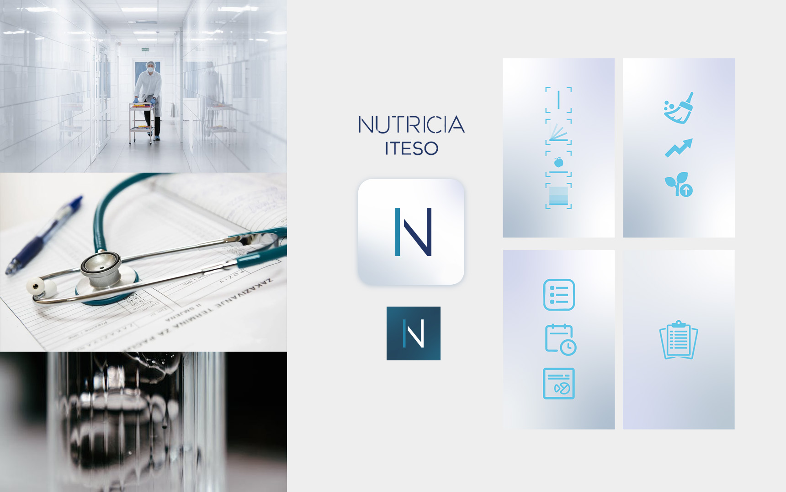
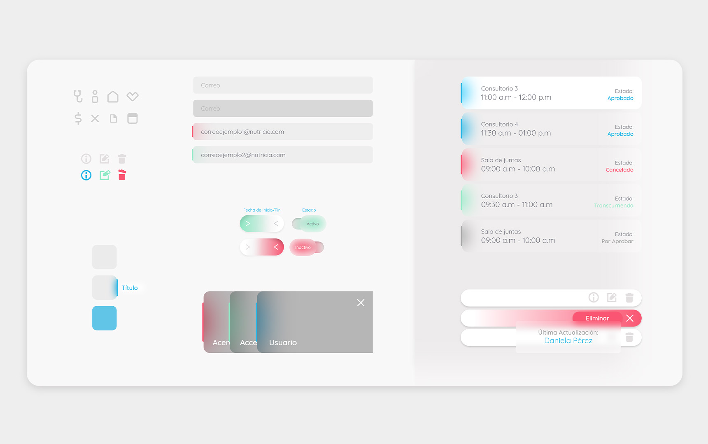
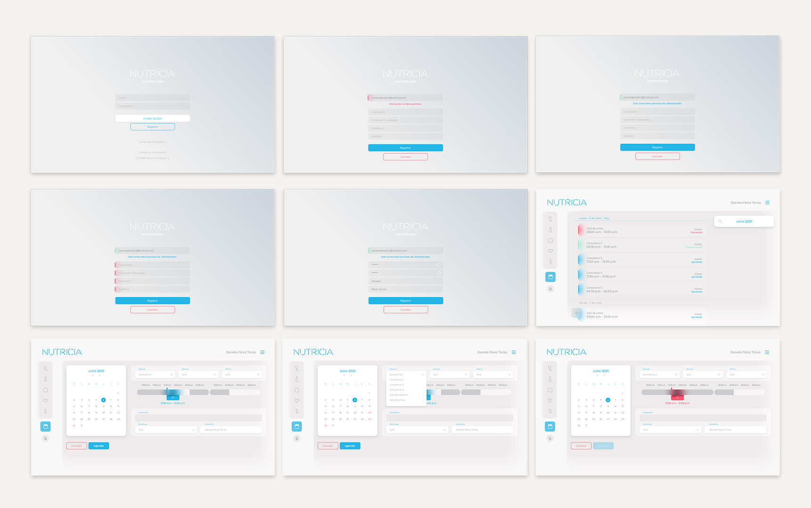
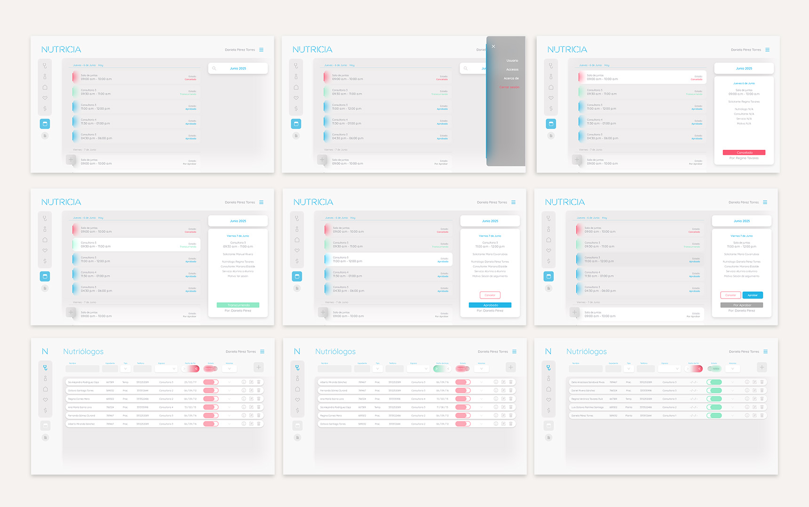
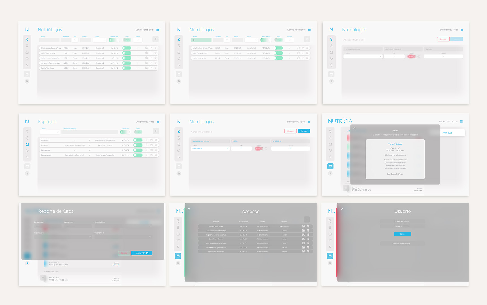

Nutricia
Desktop App
Saved the best for last? I appreciate your thorough
review of my work.
...
The Nutricia desktop platform was originally conceived as a necessary
counterpart to the mobile app. While the mobile experience focused on patient follow-ups, the clinic
required a dedicated administrative interface to manage that data. However, during the design
process, I identified a deeper systemic issue: the clinic’s internal information was fragmented and
difficult to scale. By taking the initiative to expand the project’s scope, I designed the platform
to function as a centralized hub that unifies their entire internal operations, transforming it from
a simple data manager into a comprehensive solution for the clinic’s growth.
The Nutricia desktop platform was originally conceived
as a necessary counterpart to the mobile app. While the mobile experience focused on patient
follow-ups, the clinic required a dedicated administrative interface to manage that data. However,
during the design process, I identified a deeper systemic issue: the clinic’s internal information
was fragmented and difficult to scale. By taking the initiative to expand the project’s scope, I
designed the platform to function as a centralized hub that unifies their entire internal
operations, transforming it from a simple data manager into a comprehensive solution for the
clinic’s growth.
Great choice to start with.
...
Year: 2022-2023
Skills: UX/UI
Design, Product Design, User Journeys, Branding, Storytelling
Role: UX/UI Designer
Year:
2022-2023
Skills: UX/UI
Design, Product Design, User Journeys, Branding, Storytelling
Role: UX/UI Designer
(The following video provides an illustrative introduction to the
project)
Cleanliness is the core protagonist of the app, maintaining strict coherence with the clinical environment. While clarity provides the foundation, the narrative is driven by the vertical line. In an interface dominated by extensive data lists, this verticality projects a sense of order, direction, and progress. The line serves as a universal communicator, accompanying every component and utilizing specific color-coding and positioning to define the character and status of the information at a glance.


The main page of the Nutricia Desktop interface is a daily calendar designed for precise control over
current and future appointments. This module allows staff to schedule consultations directly within the
system, bypassing the mobile app for in-site schedules. To ensure professional data management, the
platform allows the clinic to generate comprehensive records that uses internal servers.
The desk
app manages vast amounts of data through fully editable information lists, covering nutritionists,
patients, spaces, services, and finances. Each equipped with specialized filters for rapid navigation.
I implemented a hierarchical permission system where critical registration requests are routed to senior
profiles for approval, while every modification is logged to ensure full accountability and traceability
across the administrative team.


